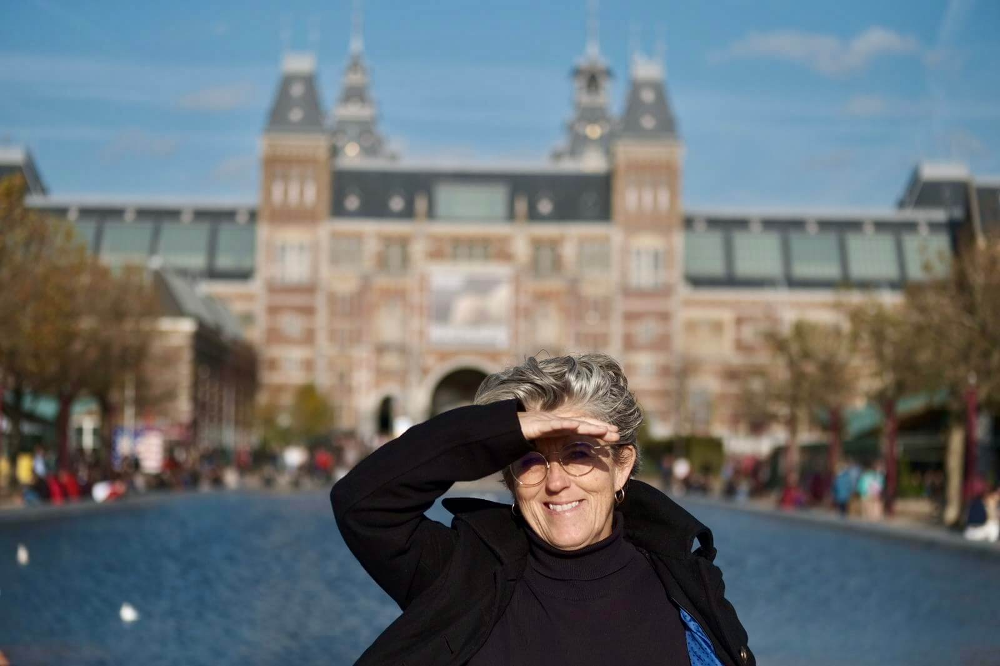
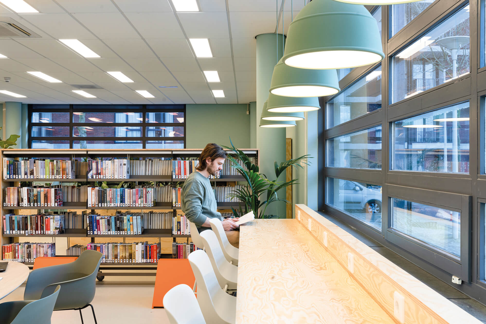
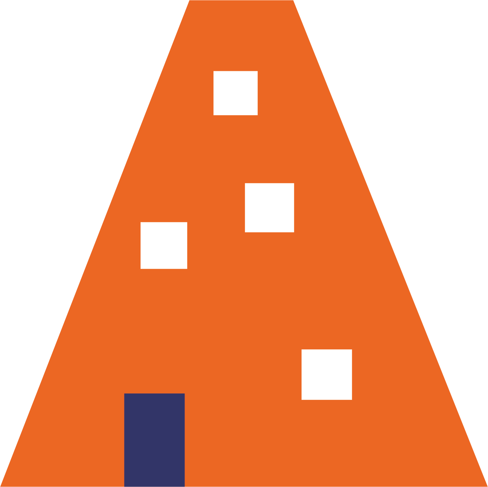

Nieuws

Suzan Baldinger, projectleider Opgroeiwijken: 'Samen bouwen we aan een betere toekomst voor de kinderen in Geuzenveld en Slotermeer

De nieuwe look van de Buurtcampus: 'Deze plek is de huiskamer van de stad'
Hulp bij Digitaal helpt buurtbewoners met hun digitale vragen: 'Het doorsturen van een e-mail is een stuk eenvoudiger dan het leek'
